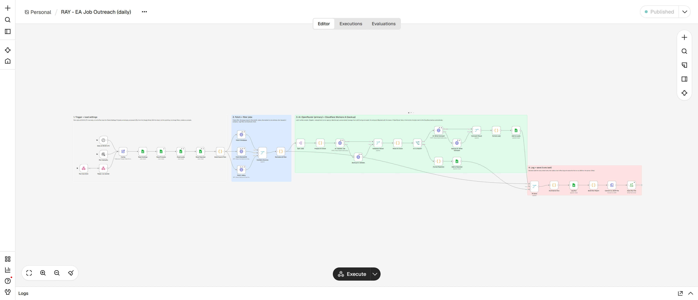

| Code repository | github.com/benjaminkariuki/ray-ai-automation-case-study |
| Task 1 – Google Sheet | docs.google.com/spreadsheets/d/1GwAt8R3_O-h6ivZ_CT_8yD6GMIdybyf2-YgscTQ9hRI |
| Task 1 – n8n workflow export | task1-job-outreach/workflow/job-outreach-workflow.json |
| Task 1 – README / user guide | task1-job-outreach/README.md |
| Task 1 – Sample output | task1-job-outreach/sample-output (CSV + JSON) |
| Task 2 – Notion | Added in the next section |
I built an n8n workflow, self-hosted on Azure with HTTPS. It runs every day at 06:00 UTC:
Filters, AI models and prompts are all edited in the Sheet, so tone can be tested without touching the workflow.

| Requirement | How it's met |
|---|---|
| ✓ Compliant, non-LinkedIn source | Three official public APIs (Himalayas, RemoteOK, Jobicy), with no HTML scraping. Each lead links to the original posting and names its source, as the boards' terms ask. |
| ✓ Fields collected and stored | Job Title, Company, Location, Description, URL and Language Requirements, plus Source and Date Posted. Stored in the Sheet and as a JSON file per run; CSV exports are in the repo. |
| ✓ Filter and validate (all 3) | A keyword, company and age pre-filter runs first. Then the LLM returns strict JSON: is_remote, is_english, is_relevant, is_agency and a reason. Only jobs passing all three checks are kept. Rejections are logged with the reason so they can be audited. |
| ✓ Personalised LLM message | Each email cites specific duties or tools from that posting. The prompt allows facts about the company only from the posting, and facts about us only from the "About us" setting. |
| ✓ Interchangeable prompt | Prompts live in the Sheet's Prompts tab. Changing Settings → outreach_prompt (for example v1_warm → v2_direct) switches the tone on the next run, and each lead records the Prompt Used. |
| ✓ Google Sheets columns | The Leads tab has the 6 required columns in order, then Language, Source, Dates, Prompt Used, Status (a dropdown) and Notes. |
| ✓ Scheduling | An n8n Schedule Trigger runs daily at 06:00 UTC on an always-on Azure VM. There's also a manual Execute button. |
| ✓ README / user guide | Covers install (existing n8n, or one-command Azure deploy), running, changing filters and prompts, troubleshooting, and a guide for sales reps. A short guide is also built into the Sheet. |

Code-node JavaScript is kept as readable files in workflow/code/ and assembled into the importable workflow by build_workflow.py. setup_sheet.py builds the formatted Sheet in one command.
While testing, I tightened the prompts after the model invented details: once a language skill, once that our assistants already knew a client's tools. I also clarified that a time-zone requirement still counts as remote.
Free-tier models are occasionally rate-limited. The Run Log records this, and affected jobs are retried automatically.
To be completed.